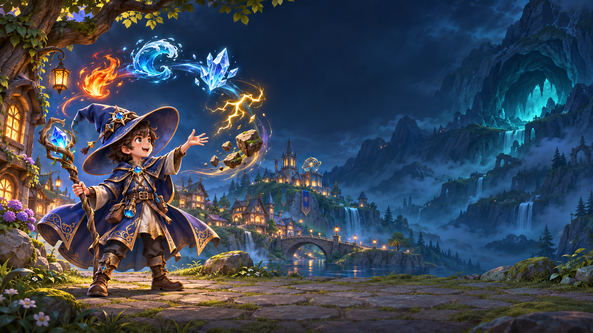

FIVE ELEMENTS
당신의 마법은 어떤 빛인가요?
원소를 선택해 다섯 마법의 특징을 만나보세요.

✦
FIRE불의 마법
불꽃과 폭발로 전장을 밝히는 마법.
개별 스킬 이미지와 상세 설명은 실제 게임 자료 확인 후 추가됩니다.
◉
WATER물의 마법
물의 흐름과 파도로 펼치는 마법.
개별 스킬 이미지와 상세 설명은 실제 게임 자료 확인 후 추가됩니다.
❄
ICE얼음의 마법
얼음과 빙결을 다루는 차가운 마법.
개별 스킬 이미지와 상세 설명은 실제 게임 자료 확인 후 추가됩니다.
ϟ
LIGHTNING전기의 마법
전류와 낙뢰로 펼치는 번개의 마법.
개별 스킬 이미지와 상세 설명은 실제 게임 자료 확인 후 추가됩니다.
◆
EARTH대지의 마법
암석과 지면의 힘을 다루는 묵직한 마법.
개별 스킬 이미지와 상세 설명은 실제 게임 자료 확인 후 추가됩니다.